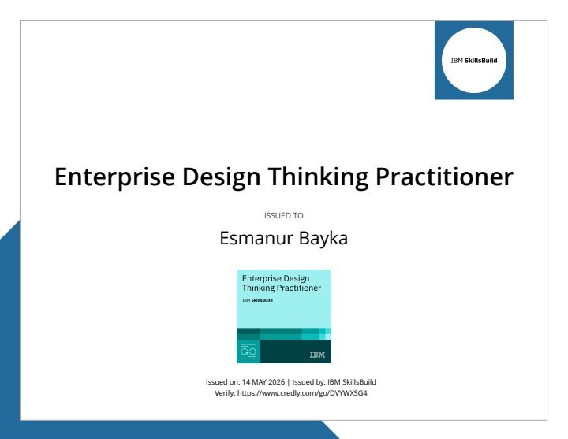
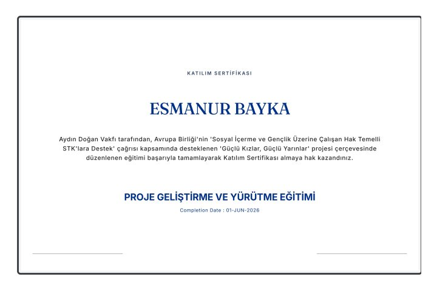
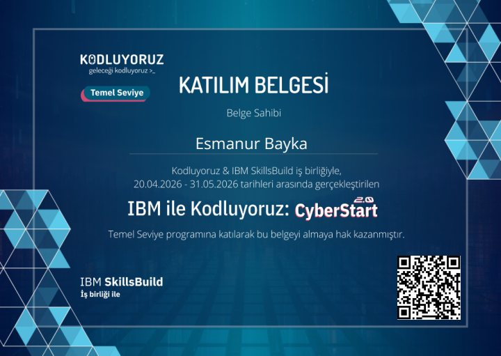
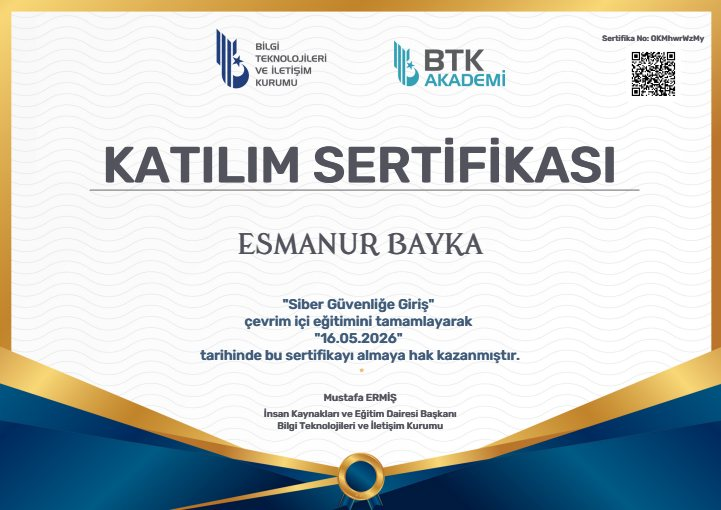
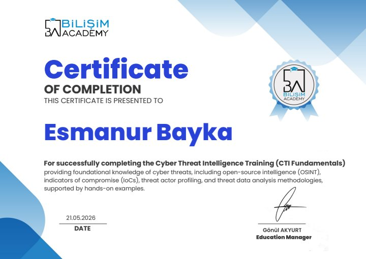
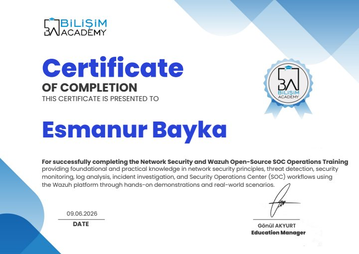
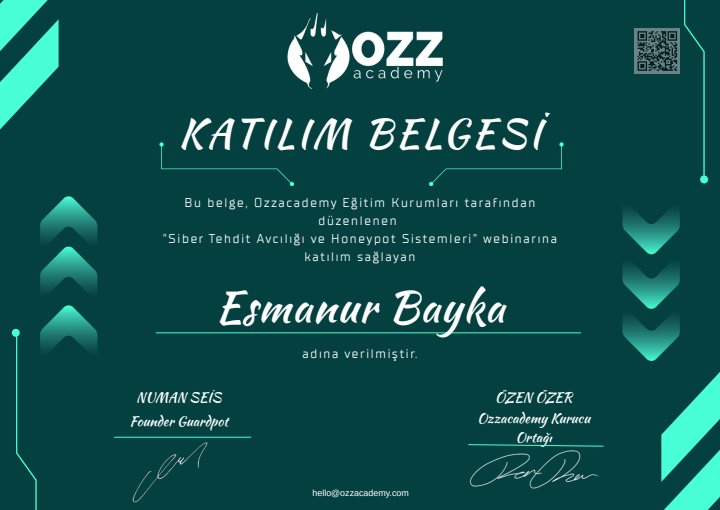
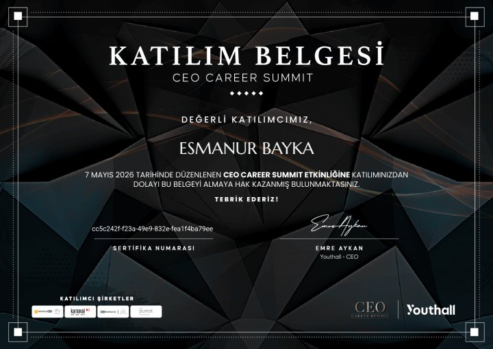
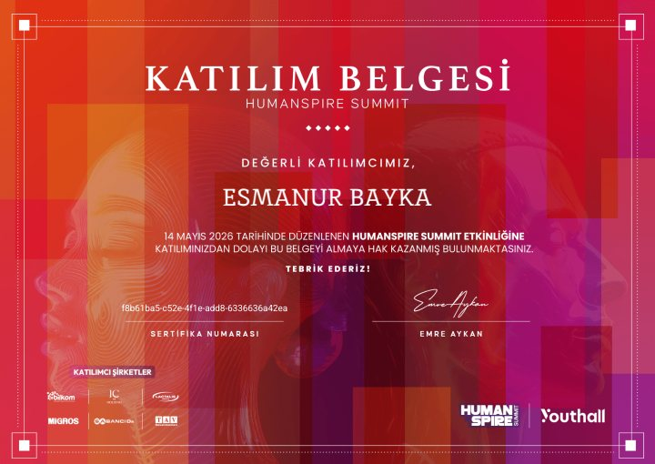
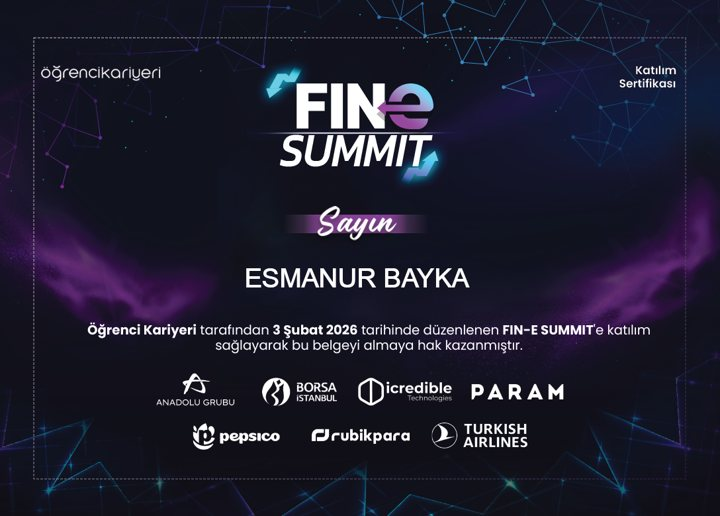

FocusBoard
React öğrenme projesi. Görev oluşturma, düzenleme, filtreleme, yerel kayıt ve silmeyi geri alma. AI desteğiyle geliştirildi.
React · Vite · Vitest
Kaynak kodAtatürk Üniversitesi Web Tasarımı ve Kodlama 2. sınıf öğrencisiyim. HTML, CSS ve JavaScript ile arayüzler geliştiriyor, React öğrenme projeleri üzerinde çalışıyorum. Web ve mobil geliştirme alanında deneyim kazanmak istiyorum.

Tasarım dünyasına olan ilgim, renklerin, biçimlerin ve düzenin dijital ortamdaki etkisini fark ettiğim anda başladı. Web tasarımıyla tanıştığımda, görselliği kodlarla birleştirme fikri beni büyüledi — işte o an, bu alanda ilerlemem gerektiğini anladım.
HTML, CSS ve JavaScript öğrenmeye başladığımda sadece bir web sitesi değil, aynı zamanda hayallerimi kodlamaya başladım. Her satır kod, bana yeni bir kapı açtı. Front-end’in yaratıcılığını ve Back-end’in mantığını keşfettikçe yazılımın sınırsız bir dünya olduğunu fark ettim.
Küçük projelerle başlayan serüvenim, kullanıcı odaklı web uygulamalarına dönüştü. Her proje, yeni bir beceri, yeni bir bakış açısı kazandırdı. Karşılaştığım her zorluk, beni daha sistematik düşünen ve çözüm odaklı bir geliştirici yaptı.
Yazılım dünyası sürekli gelişiyor, ben de bu değişimin bir parçası olmaktan heyecan duyuyorum. Amacım; tasarımı, teknolojiyi ve kullanıcı deneyimini bir araya getirerek ilham veren projelere imza atmak. Bu yolculuk benim için sadece bir kariyer değil, aynı zamanda bir tutku.
HTML, CSS ve JavaScript ile responsive sayfalar geliştiriyorum. Tasarımı farklı ekranlarda kullanılabilir hâle getirmeye odaklanıyorum.
PHP ve SQL temellerini öğreniyorum. Veri saklama ve sunucu tarafı geliştirme konularında alıştırmalar yapıyorum.
FocusBoard üzerinde bileşenler, state yönetimi ve otomatik testlerle çalışıyorum. Öğrendiklerimi küçük uygulamalarla pekiştiriyorum.
Mobil arayüzlere ilgi duyuyorum. Responsive web deneyimimin üzerine React Native ve Expo öğrenmeyi hedefliyorum; yayımlanmış bir mobil uygulamam bulunmuyor.
React öğrenme projesi. Görev oluşturma, düzenleme, filtreleme, yerel kayıt ve silmeyi geri alma. AI desteğiyle geliştirildi.
React · Vite · Vitest
Kaynak kodKendi siyah-kırmızı tasarımım üzerine kurduğum HTML, CSS ve JavaScript sitesi. Yolculuğumu ve çalışmalarımı bir araya getiriyor.
HTML · CSS · JavaScript
Kaynak kodGönüllü çalışma · Devam ediyor
Siber güvenlik ve teknoloji gündemini takip ediyor; yapay zekâ, dijital güvenlik ve güncel gelişmeler üzerine haberler yazıyorum.
Kişisel çalışma
HTML, CSS ve JavaScript ile kendi portfolyo sitemi oluşturdum. Responsive yerleşim, mobil gezinme ve görsel tasarım üzerine çalıştım.
AI destekli öğrenme projesi
React bileşenleri, görev yönetimi ve tarayıcıda veri saklama üzerine çalışıyorum. Vitest ve React Testing Library ile kullanıcı akışlarının test edilmesini öğreniyorum.
Eğitimler, dijital rozetler ve katıldığım etkinliklerden belgeler.
15 belge gösteriliyor

Eğitim / rozet
IBM SkillsBuild
14 Mayıs 2026

Eğitim / rozet
Aydın Doğan Vakfı
1 Haziran 2026

Etkinlik katılımı
Kodluyoruz & IBM SkillsBuild
20 Nisan – 31 Mayıs 2026
Eğitim / rozet
BTK Akademi / Bilgi Teknolojileri ve İletişim Kurumu
26 Nisan 2026
Eğitim / rozet
BTK Akademi / Bilgi Teknolojileri ve İletişim Kurumu
15 Mayıs 2026

Eğitim / rozet
BTK Akademi / Bilgi Teknolojileri ve İletişim Kurumu
16 Mayıs 2026
Eğitim / rozet
BTK Akademi / Bilgi Teknolojileri ve İletişim Kurumu
16 Mayıs 2026
Eğitim / rozet
BTK Akademi / Bilgi Teknolojileri ve İletişim Kurumu
19 Mayıs 2026
Eğitim / rozet
BTK Akademi / Bilgi Teknolojileri ve İletişim Kurumu
16 Mayıs 2026

Eğitim / rozet
Bilişim Academy
21 Mayıs 2026

Eğitim / rozet
9 Haziran 2026

Etkinlik katılımı
Ozzacademy
16 Haziran 2026

Etkinlik katılımı
Youthall
7 Mayıs 2026

Etkinlik katılımı
Youthall
14 Mayıs 2026

Etkinlik katılımı
Öğrenci Kariyeri
3 Şubat 2026
Bu dosyalar ders notlarıdır; sertifika veya başarı belgesi değildir.
Bu form mesajı e-posta uygulamanda hazırlar; gönderme işlemini sen tamamlarsın. Doğrudan e-posta gönder.